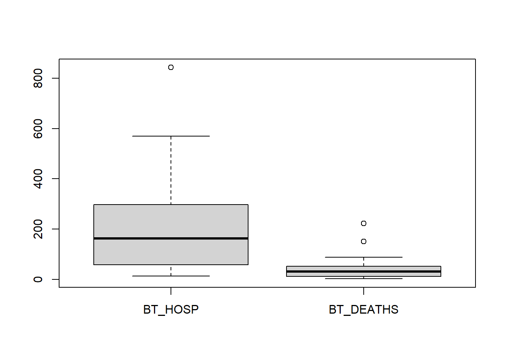

table1 <- read.table(file="data/Breakthrough_covid",header=TRUE,row.names=1)
attach(table1)
table2 <- read.table(file = "data/Covid_rates_per_100000", header = TRUE, row.names = 1 )
attach(table2)Lab_1
Here is where we set up our data
Questions
1. What is the population under study?
The total human population of each state would be the population under study.
Questions 2 - 6 are concerned with the first dataset on breakthrough Covid cases.
2. Plot the number of breakthrough deaths BT DEATHS by state. (I.e. U.S. state is on the x-axis.) Then plot the PCT OF ALL COVID DEATHS by state too. Include (carefully labeled) plots.
plot(BT_DEATHS, xlab="", axes = FALSE, main = "Number of Breakthrough Deaths")
axis(2)
axis(1, at=1:41, labels=rownames(table1), las=2, cex.axis=0.8)plot(PCT_OF_ALL_COVID_DEATHS, xlab="", axes = FALSE, main = "Percentage of all Covid Deaths")
axis(2)
axis(1, at=1:41, labels=rownames(table1), las=2, cex.axis = 0.8)3. Compute the Min, Q1, Median, Mean, Q3, Max for the numerical variables BT HOSP, PCT OF ALL COVID HOSP, BT DEATHS, PCT OF ALL COVID DEATHS and record them below. For which (if any) of these variables do the mean and median differ substantially? Discuss briefly
a <- quantile(BT_HOSP, na.rm = TRUE, probs = c(0.25, 0.75))
b <- quantile(PCT_OF_ALL_COVID_HOSP, na.rm = TRUE, probs = c(0.25, 0.75))
c <- quantile(BT_DEATHS, na.rm = TRUE, probs = c(0.25, 0.75))
d <- quantile(PCT_OF_ALL_COVID_DEATHS, na.rm = TRUE, probs = c(0.25, 0.75))| NAME | Min | Max | Mean | Median | Q1 | Q3 |
|---|---|---|---|---|---|---|
| BT_HOSP | 12 | 843 | 198.8462 | 162 | 58 | 297 |
| PCT_OF_ALL_COVID_HOSP | 0.1 | 4.7 | 1.055 | 0.8 | 0.400 | 1.125 |
| BT_DEATHS | 2 | 223 | 38.175 | 31 | 11.0 | 50.5 |
| PCT_OF_ALL_COVID DEATHS | 0.2 | 5.6 | 2.026829 | 1.9 | 0.9 | 2.7 |
The means and medians don’t seem to differ too substantially all things considered, they generally remain around the same ballpark relative to their Min and Max values.
4. Make one plot with two boxplots for the variables BT HOSP and BT DEATHS. Then make a single plot with two boxplots for the variables PCT OF ALL COVID HOSP and PCT OF ALL COVID DEATHS. Include your plots below. Summarize what you learn from viewing the boxplots.
boxplot(BT_HOSP, BT_DEATHS, names = c("BT_HOSP", "BT_DEATHS"))
boxplot(PCT_OF_ALL_COVID_HOSP, PCT_OF_ALL_COVID_DEATHS, names = c("PCT_OF_ALL_COVID_HOSP", "PCT_OF_ALL_COVID_DEATHS"))Boxplots are pretty neat ways of summarizing data
5. Looking at the data for Alaska, how does it compare to other states? Do you think Alaska is typical? Can
you think of any factors that might explain the data for Alaska in comparison with the other states?
Alaska has a lower overall amount of breakthrough deaths but a higher percentage of deaths relative to population. This is probably because of Alaska’s smaller
population combined with less medical infrastructure.
6. Having explored these data, discuss them. Can you draw any conclusions from it? How confident are you in
your conclusions? Is there more data collection you would like to do?
You can probably conclude which is the best state to be in if you were vulnerable to COVID 19 and similar infectious diseases. Although I’m not very confident in making such conclusions. Too many unconsidered and unknown variables at play to make any definitive conclusions from the data in my opinion.
Questions 7 - 9 are concerned with the second dataset on hospitalization and death
rates.
7. Make attractive and informative frequency histograms for the numerical variables HOSP RATE VAX,
HOSP RATE UNVAX, DEATH RATE VAX, and DEATH RATE UNVAX. By ‘informative’ I mean choose
the number of bins to illustrate the data well. Include these plots and write the R command you used to plot one
of the histograms. (For a challenge, you can plot two histograms at once, for VAX and UNVAX, if you follow
instructions https://www.dataanalytics.org.uk/plot-two-overlapping-histograms-on-one-chart-in-r/
hist(HOSP_RATE_VAX,seq(0,100,4))hist(HOSP_RATE_UNVAX,seq(0,4000,100))hist(DEATH_RATE_VAX,seq(0,10,1))hist(DEATH_RATE_UNVAX,seq(0,200,10))
8. Looking at the histogram for the variable HOSP RATE UNVAX, can you tell if the mean is bigger than the
median? Explain.
The mean is most affected by outlier values, considering the graph I would say the mean is larger than the median because of a large value close to 200.
9. Discuss these data in light of your understanding of the Covid pandemic.
Its pretty neat that we have tools and mathematics to sift through data in order to gain insight. During 2020 I just went with my gut and moved to Alaska, the thing about data is that its collected from events that have already happened. If a new event happens and we have no previous data to go on it, it becomes harder to draw meaningful conclusions that doesn’t just boil down to a guess.